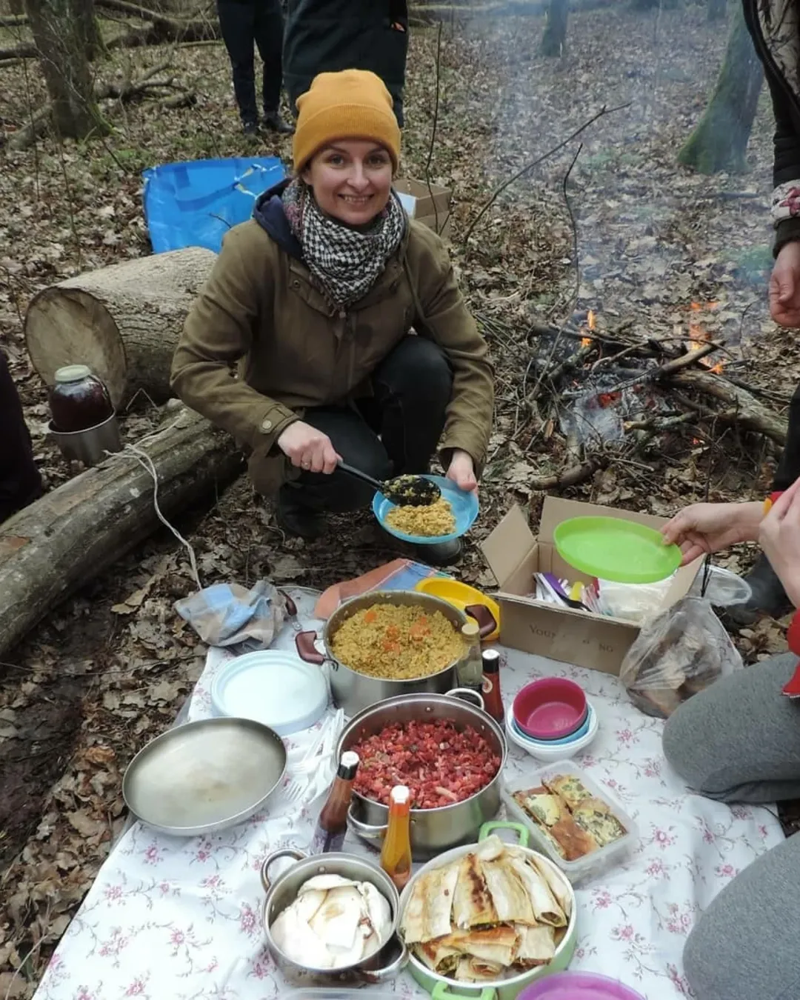
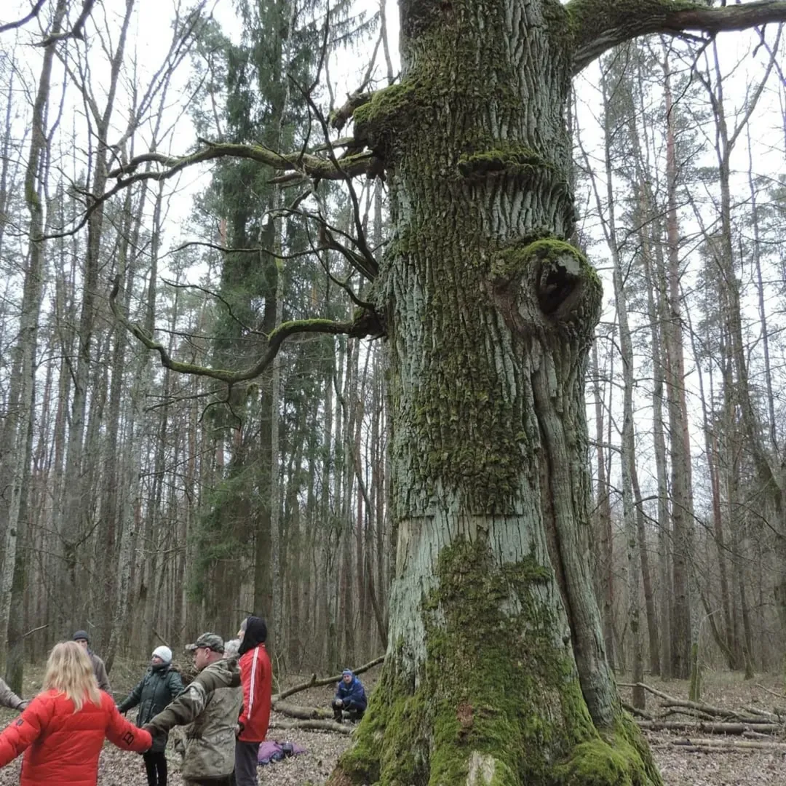
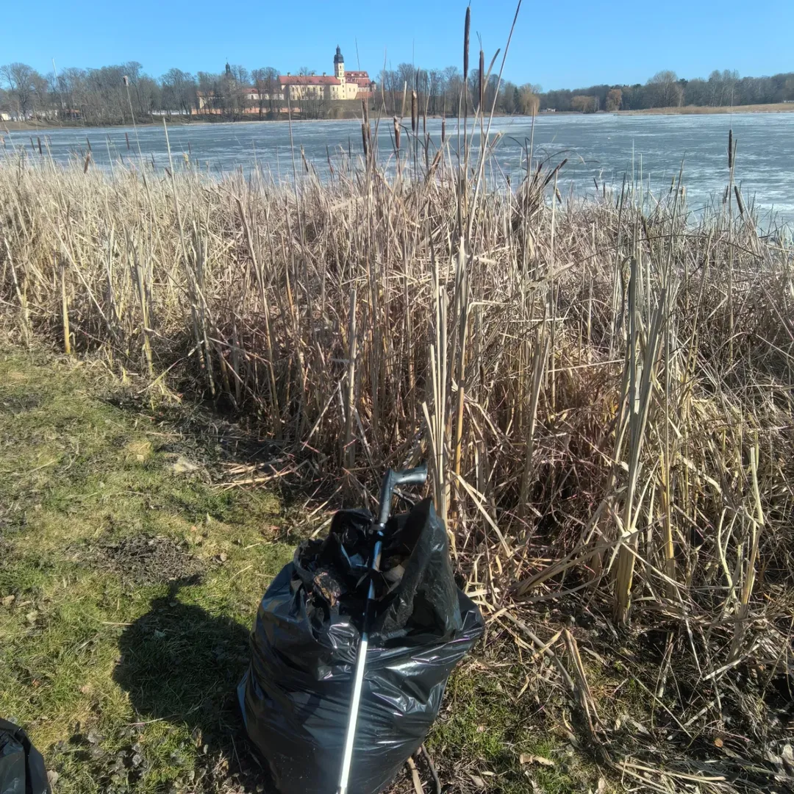
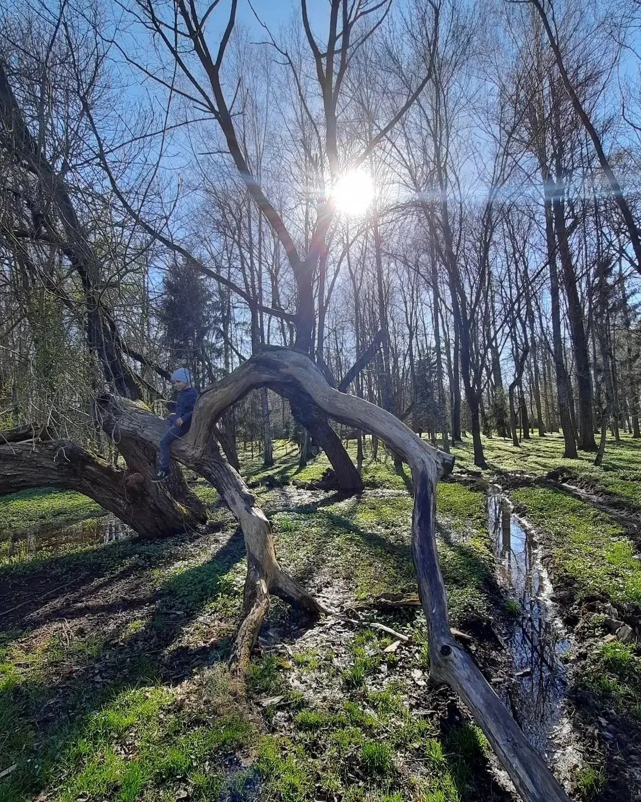
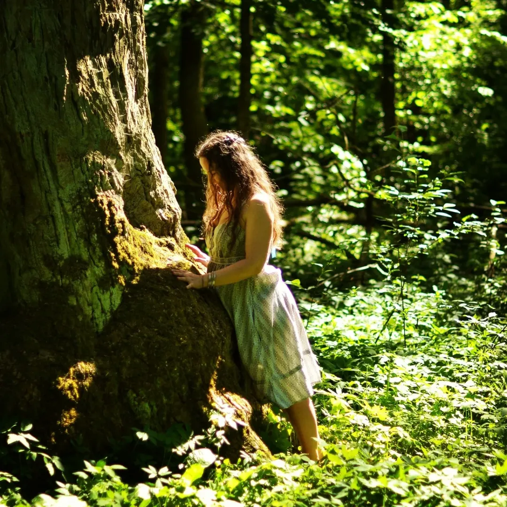
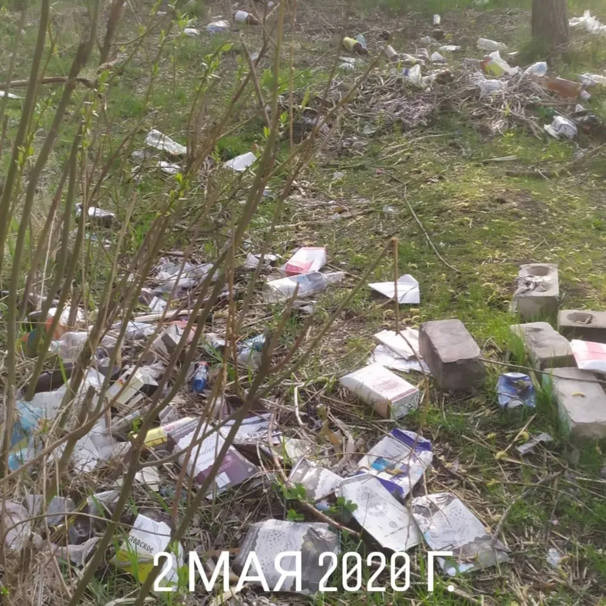

Волонтёрский проект · с 2020 года Валанцёрскі праект · з 2020 года
400-летний парк восстанавливают обычные люди — своими руками, в выходные дни. Каждый субботник — это несколько метров возвращённых аллей. Присоединяйтесь. 400-гадовы парк аднаўляюць звычайныя людзі — уласнымі рукамі, у выхадныя дні. Кожны суботнік — гэта некалькі метраў вернутых алей. Далучайцеся.

Почему это важно Чаму гэта важна
Альба — памятник природы и истории, которому нет равных в Беларуси. Первый зоопарк, старейшая аллея, система каналов XVI–XVIII веков. Но официального статуса особо охраняемой территории у парка нет, и ресурсов на восстановление — тоже. Альба — помнік прыроды і гісторыі, якому няма роўных у Беларусі. Але афіцыйнага статусу асабліва ахоўнай тэрыторыі ў парку няма, і рэсурсаў на аднаўленне — таксама.
Каналы зарастают и переувлажняются. Аллеи перекрыты упавшими деревьями. О парке не знают даже многие несвижане. Если не расчищать и не рассказывать — он исчезнет окончательно. Каналы зарастаюць. Алеі перакрытыя ўпалымі дрэвамі. Пра парк не ведаюць нават многія нясвіжане. Калі не расчышчаць і не расказваць — ён знікне канчаткова.
Именно поэтому с 2020 года Анна Полын собирает волонтёров на регулярные субботники. Городской исполком и лесхоз поддерживают инициативу — но рук не хватает. Менавіта таму з 2020 года Ганна Полын збірае валанцёраў на рэгулярныя суботнікі. Гарадскі выканкам і лясгас падтрымліваюць ініцыятыву — але рук не хапае.

Как помочь Як дапамагчы
Не обязательно приезжать физически — рассказать об Альбе друзьям тоже очень важно. Не абавязкова прыязджаць фізічна — расказаць пра Альбу сябрам таксама вельмі важна.
Расчистка аллей, вырубка зарослей, уборка мусора. Несколько раз в год, все возрасты приветствуются. Инструменты есть — нужны только руки и желание. Расчыстка алей, высечка зараснікаў, уборка смецця. Некалькі разоў на год, любы ўзрост. Інструменты ёсць — патрэбны толькі рукі і жаданне.
Самое ценное Самае каштоўнаеПоделитесь этим сайтом в соцсетях, расскажите друзьям кто едет в Несвиж. Чем больше людей знают об Альбе — тем больше шансов на официальное восстановление. Падзяліцеся гэтым сайтам у сацсетках, раскажыце сябрам, якія едуць у Нясвіж. Чым больш людзей ведаюць пра Альбу — тым больш шансаў на афіцыйнае аднаўленне.
Можно прямо сейчас Можна прама заразПриедьте, сфотографируйте парк и опубликуйте с тегом #альбанесвиж. Красивые фото — лучший способ привлечь внимание к месту, которое этого заслуживает. Прыедзьце, сфатаграфуйце парк і апублікуйце з тэгам #альбанясвіж. Прыгожыя фота — лепшы спосаб прыцягнуць увагу да месца, якое гэтага заслугоўвае.
#альбанесвижНужна помощь с историческими исследованиями, переводами старых документов, поиском архивных материалов. Если у вас есть соответствующие навыки — напишите нам. Патрэбна дапамога з гістарычнымі даследаваннямі, перакладамі старых дакументаў, пошукам архіўных матэрыялаў.
Для историков и архивистов Для гісторыкаў і архівістаўБлогеры, журналисты, путешественники — напишите об Альбе на своих платформах. Каждая публикация приближает парк к официальному признанию и реставрации. Блогеры, журналісты, падарожнікі — напішыце пра Альбу на сваіх платформах. Кожная публікацыя набліжае парк да афіцыйнага прызнання.
Для блогеров и СМИ Для блогераў і СМІШкольный класс, коллеги, друзья — организуйте групповой субботник. Командная расчистка за несколько часов даёт результат, на который одному человеку нужны дни. Школьны клас, калегі, сябры — арганізуйце групавы суботнік. Каманднае расчышчэнне за некалькі гадзін дае выдатны вынік.
Для групп и организаций Для груп і арганізацыйПрошлые субботники Мінулыя суботнікі
С 2020 года волонтёры провели несколько субботников. Вот некоторые из них. З 2020 года валанцёры правялі некалькі суботнікаў. Вось некаторыя з іх.

Первая организованная акция по уборке берегов у замковых прудов и на территории Альбы. Показала масштаб проблемы и привлекла внимание местных жителей и СМИ. Першая арганізаваная акцыя па ўборцы берагоў у замкавых сажалак і на тэрыторыі Альбы. Паказала маштаб праблемы і прыцягнула ўвагу.
Волонтёры исследовали территорию парка, нанесли на карту сохранившиеся элементы: каналы, аллеи, фундаменты построек. Составили план первоочерёдных работ. Валанцёры даследавалі тэрыторыю парку, нанеслі на карту захаваныя элементы: каналы, алеі, падмуркі пабудоў. Склалі план першачарговых работ.



Инициатор проекта Ініцыятар праекта
Анна — психолог из Несвижа, которая однажды обнаружила Альбу во время прогулки и была потрясена тем, что такое место находится в полном запустении. Так начался волонтёрский проект, который с 2020 года собирает людей на субботники. Ганна — псіхолаг з Нясвіжа, якая аднойчы выявіла Альбу падчас прагулкі і была ўражана тым, што такое месца знаходзіцца ў поўным запусценні. Так пачаўся валанцёрскі праект.
«Альба в переводе с итальянского означает "Рассвет", — говорит Анна. — И мы верим, что у этого места будет свой рассвет. Главное — чтобы люди узнали о нём и полюбили его так же, как мы.» «Альба ў перакладзе з італьянскай азначае "Досвітак", — кажа Ганна. — І мы верым, што ў гэтага месца будзе свой досвітак. Галоўнае — каб людзі даведаліся пра яго.»
Контакты Кантакты
Все анонсы субботников и новости парка публикуются в соцсетях. Вопросы и предложения — тоже туда. Усе анонсы суботнікаў і навіны парку публікуюцца ў сацсетках.
Фото парка в разные сезоны, анонсы субботников, истории о деревьях и каналах Фота парку ў розныя сезоны, анонсы суботнікаў, гісторыі пра дрэвы і каналы
Подробные отчёты о субботниках, план возрождения парка, обсуждения и история Падрабязныя справаздачы пра суботнікі, план адраджэння парку, абмеркаванні і гісторыя
Несвиж, посёлок Альба. 3,9 км от замка по ул. Дзержинского Нясвіж, пасёлак Альба. 3,9 км ад замка па вул. Дзяржынскага